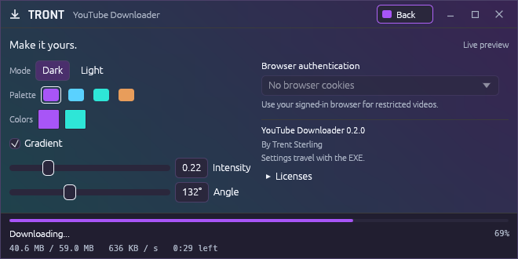

YouTube Downloader for Windows
A link in.
A file out.
Save videos, audio-only MP3s, or both. A compact portable app with its download tools already bundled.
Download EXE
Keep what you came for.
Paste a link. Fetch the video. Pick a quality and a folder.
- Video, with audio.
- Take the best available quality, or choose a resolution from the video’s formats.
- Just the MP3. Or both.
- Download audio on its own, or save an extra MP3 alongside your video.
- Your folder. Your files.
- See progress, speed, and time left. Open the finished download’s folder from the app.
- One portable EXE.
- Run it without installing Python or setting up FFmpeg. Its tools come with it.

Small window.
Your colors.
Start with a palette, then change the colors, gradient, or light mode. Download progress stays visible while you make it yours.
Custom title bar. Compact controls. A preview that earns its space.
Download. Run. Paste a link.
Version 0.2.0 for Windows x64. One EXE, 108.7 MiB. No installer.
The build is unsigned. A SHA-256 checksum is provided with the release.
Where do my preferences live?
Settings are saved beside the EXE in youtube-downloader.portable.json. Keep that optional file with the app to carry your settings.
Can it use my browser login?
Choose Chrome, Edge, or Firefox under Browser authentication in the Theme view to use cookies from your signed-in browser.
What powers the downloads?
The desktop app uses Rust and egui. yt-dlp handles extraction, with QuickJS-NG and FFmpeg bundled as separate tools. Their credits, licenses, and source links are in the third-party notices.